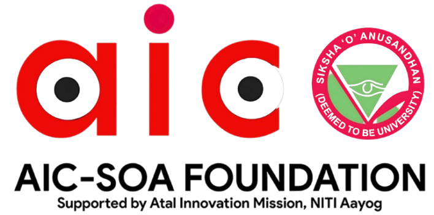

Dr. Patra brings extensive experience in scientific research, institutional leadership, and innovation-driven ecosystems. He actively mentors startups and research teams in advanced technologies.

Mr. Panicker is a seasoned industry leader with expertise in semiconductor manufacturing, business strategy, and scaling technology-driven enterprises.

With decades of experience in applied research and technology commercialization, Mr. Gouda supports startups through scientific mentoring and innovation guidance.

Prof. Panigrahi specializes in research leadership and innovation management, enabling academic excellence and industry collaboration.

Prof. Mohanty contributes deep academic insight and mentoring expertise in science and engineering disciplines.

Prof. Sardar provides mentorship in agricultural innovation, veterinary sciences, and applied research solutions.

Mr. Sivaramakrishnan brings startup ecosystem experience in funding, growth strategy, and venture development.

Dr. Govind mentors startups and researchers in healthcare innovation, clinical research, and medical entrepreneurship.

Prof. Mishra focuses on computer science research, AI applications, and mentoring technology-based startups.

Prof. Mohanty supports innovation in electronics, embedded systems, and applied engineering research.

Prof. Sahoo mentors startups in chemical sciences, material research, and sustainable technologies.

Prof. Acharya provides expertise in mechanical design, manufacturing innovation, and industrial mentoring.

Dr. Sahu mentors startups working on climate solutions, sustainability, and environmental innovation.

Prof. Rath guides startups in pharmaceutical research, drug development, and healthcare innovation.

Prof. Subudhi supports biotech startups with scientific mentoring and translational research expertise.

Dr. Satpathy brings clinical experience and healthcare mentoring to early-stage innovators.

Dr. Mishra mentors healthcare startups focusing on dental technologies and clinical solutions.

Dr. Panigrahi supports medical innovation, clinical research, and healthcare entrepreneurship.

Dr. Kar provides mentorship in medical research, diagnostics, and health technology development.

Dr. Mohapatra guides innovators in clinical research, healthcare solutions, and translational medicine.

Dr. Ray mentors healthcare startups with a focus on patient-centric innovation and research excellence.

Prof. Das supports startups in business strategy, management, and entrepreneurial leadership.

Prof. Sahoo provides mentorship in veterinary sciences, agri-innovation, and applied research.